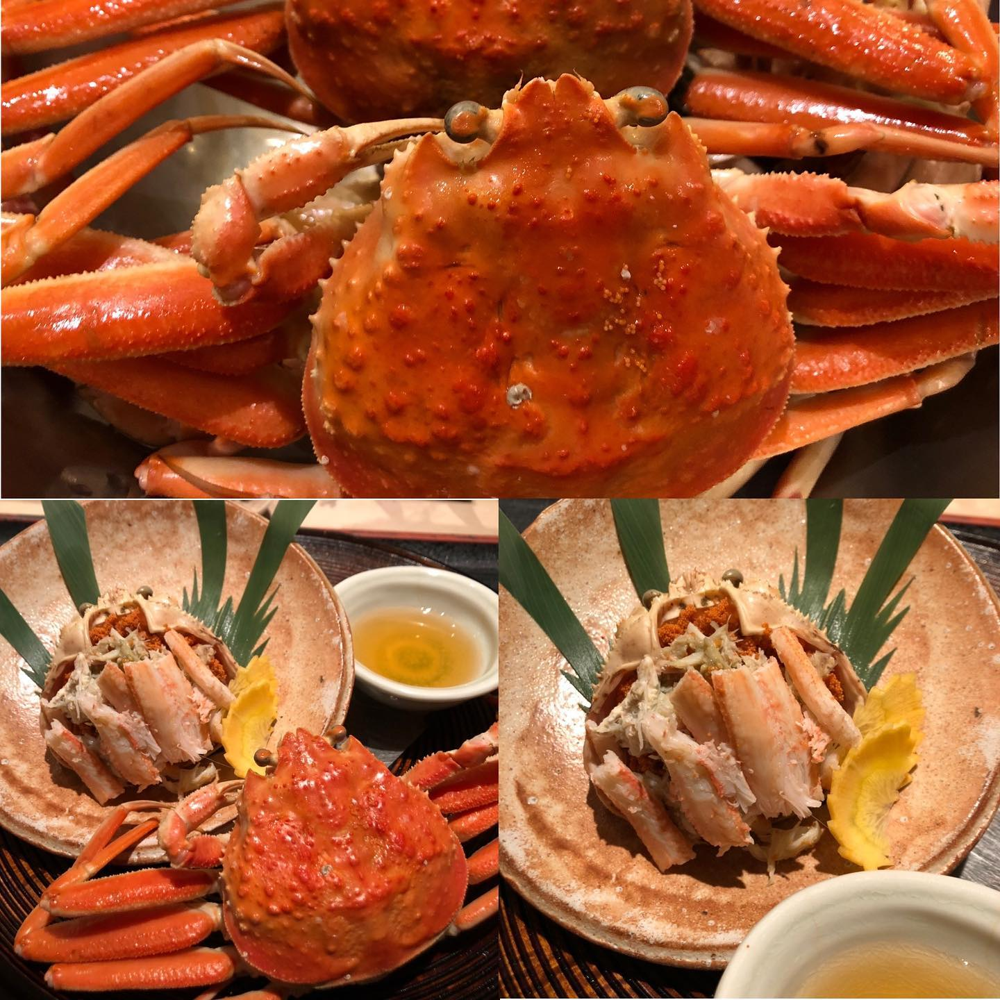

こんにちは🌞せいこ蟹入荷しました🦀❣️ズワイカニの中でも色々な呼び方がありますが、セコガニはズワイカニのメスを指し、1年で食べられるのはわずか二ヶ月ほどです。卵の味がまた格別で蟹好きの方にはおすすめで御座います♪是非1年で2ヶ月だけの贅沢❣️福井のせいこ蟹をご堪能くださいませ♪ご来店お待ちしております＾＾#寿司はせ川西麻布店#寿司#西麻布#六本木#グルメ#はせ川#寿司はせ川#完全個室#カウンター席#コロナ対策#高級食材#鮑#伊勢海老#のどぐろ#きんき#鍋#鍋料理#旬の食材#和食#器#会席#寿司会席#日本料理#伝統#和食#記念日#誕生日#忘年会#せこがに#蟹#ズワイカニ
